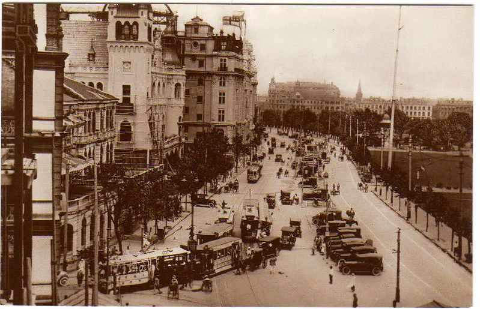
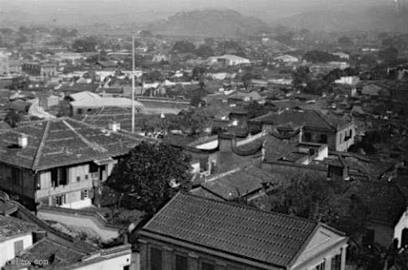
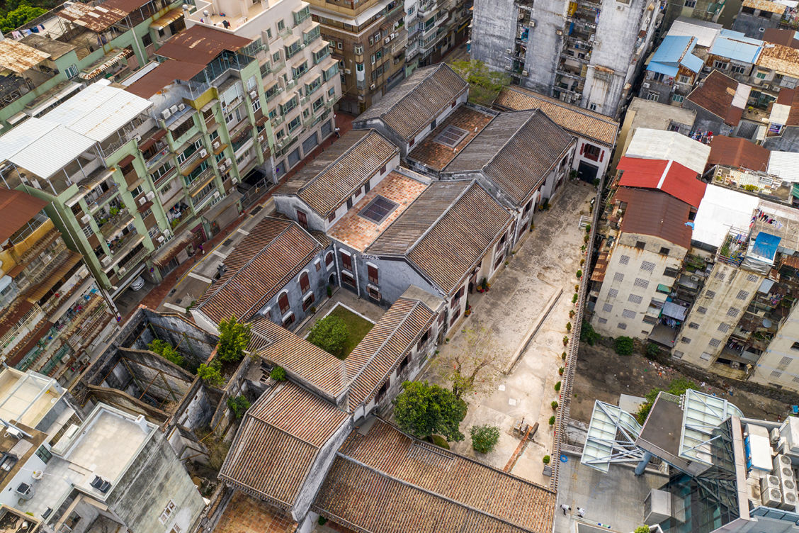
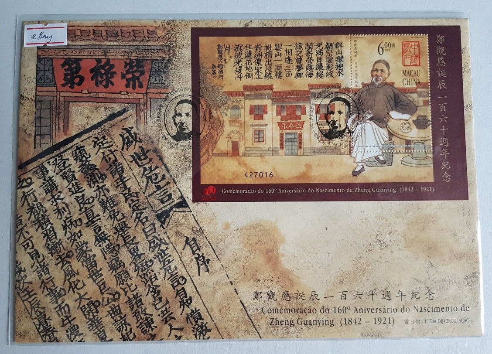
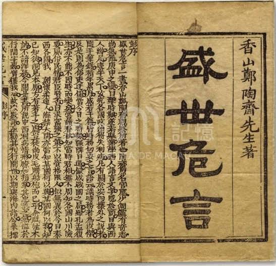
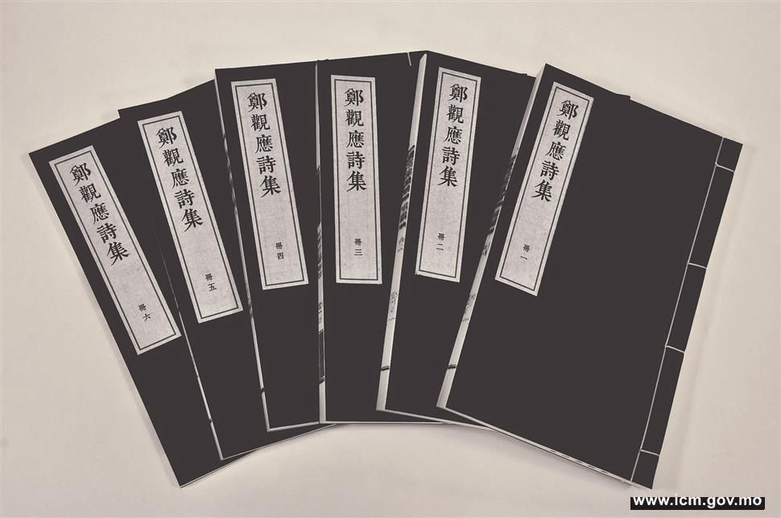

道光二十二年（1842)
7月24日（六月十七日）出生於廣東省香山縣（今中山市）雍陌鄉。
咸丰八年（1858)
是年在其家鄉香山縣應童子試，未中，奉父命弃舉業到上海學做商賈。 先在其叔父——新德洋行買辦鄭廷江（秀山）處做幫工跑腿，學做洋務，“供走奔之勞”。 並跟廷江學英語。
咸丰十年（1860）

從天津回到上海，即被寶順洋行派管絲樓兼管輪船攬載事宜，從此開始買辦生涯。
同治一年(1862)

在傅蘭雅英語夜班學習英語外，開設江西、福建攬載行。 此為鄭獨自經商之始。是年開始“究心政治、實業之學”，在政治、實業兩個方面探索救國之道。
光绪二年(1876)
江南旱灾，捐款賑濟。 後在其父鄭文瑞的宣導和要求下，與兄弟等人在上海再次籌捐。
光绪七年(1881)

協助其父鄭文瑞在澳門下環媽閣街龍頭左巷10號興建占地總面積3997平方米的鄭家大屋，即鄭觀應所稱“鄭慎餘堂”。
光绪十八年(1892)

《盛世危言·自序》在廣州居易山房寫成，表明《盛世危言》五卷本已完成初稿，但還未完全定稿。
光绪二十年(1894)

仲春，所著的《盛世危言》五卷本由宏道堂刻印，三月出書，收錄孫中山撰寫的《農功》一文。
光绪二十一年(1895)

冬《盛世危言》增訂新編十四卷本刊行。
光绪二十六年(1900)

秋冬間《盛世危言》增訂新編八卷本刊行。 書首頁由鄭親筆題寫“光緒庚子偫鶴齋重印”字樣。 該書在編排上與十四卷本不同，把《議院》即立憲放到很突出的地位，並相應新增《原君》、《自强論》和強烈反對專制獨裁的附錄等篇。
光绪三十三年(1907)
9月（八月）開始在澳門編輯整理《盛世危言後編》。
民国10年(1921)
6月14日在上海提籃橋招商局公學宿舍病逝。 次年移葬香山縣前山（今屬珠海市）。